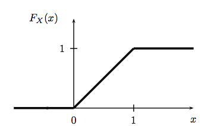

Distributions
The shapes that randomness takes.
Remember that a Random Variable is a mapping $ X: $ that assigns a real number \(X(\omega)\) to each outcome \(\omega\) in a sample space \(\Omega\). The definitions below are taken from Larry Wasserman’s All of Statistics.
Cumulative distribution Function
The cumulative distribution function, or the CDF, is a function
\[F_X : \mathbb{R} → [0, 1] \],
defined by
\[F_X (x) = p(X \le x).\]
A note on notation: \(X\) is a random variable while \(x\) is a particular value of the random variable.
Let \(X\) be the random variable representing the number of heads in two coin tosses. Then \(x\) can take on values 0, 1 and 2. The CDF for this random variable can be drawn thus (taken from All of Stats):

Notice that this function is right-continuous and defined for all \(x\), even if $x $does not take real values in-between the integers.
Probability Mass and Distribution Function
\(X\) is called a discrete random variable if it takes countably many values \(\{x_1, x_2,…\}\). We define the probability function or the probability mass function (pmf) for X by:
\[f_X(x) = p(X=x)\]
\(f_X\) is a probability.
The pmf for the number of heads in two coin tosses (taken from All of Stats) looks like this:

On the other hand, a random variable is called a continuous random variable if there exists a function \(f_X\) such that \(f_X (x) \ge 0\) for all x, \(\int_{-\infty}^{\infty} f_X (x) dx = 1\) and for every a ≤ b,
\[p(a < X < b) = \int_{a}^{b} f_X (x) dx\]
The function \(f_X\) is called the probability density function (pdf). We have the CDF:
\[F_X (x) = \int_{-\infty}^{x}f_X (t) dt \]
and \(f_X (x) = \frac{d F_X (x)}{dx}\) at all points x at which \(F_X\) is differentiable.
Continuous variables are confusing. Note:
- \(p(X=x) = 0\) for every \(x\). You cant think of \(f_X(x)\) as \(p(X=x)\). This holds only for discretes. You can only get probabilities from a pdf by integrating, if only over a very small paty of the space.
- A pdf can be bigger than 1 unlike a probability mass function, since probability masses represent actual probabilities.
A continuous example: the Uniform Distribution
Suppose that X has pdf \[ f_X (x) = \begin{cases} 1 & \text{for } 0 \leq x\leq 1\\ 0 & \text{otherwise.} \end{cases} \] A random variable with this density is said to have a Uniform (0,1) distribution. This is meant to capture the idea of choosing a point at random between 0 and 1. The cdf is given by: \[ F_X (x) = \begin{cases} 0 & x \le 0\\ x & 0 \leq x \leq 1\\ 1 & x > 1. \end{cases} \] and can be visualized as so (again from All of Stats):

A discrete example: the Bernoulli Distribution
The Bernoulli Distribution represents the distribution a coin flip. Let the random variable \(X\) represent such a coin flip, where \(X=1\) is heads, and \(X=0\) is tails. Let us further say that the probability of heads is \(p\) (\(p=0.5\) is a fair coin).
We then say:
\[X \sim Bernoulli(p)\]
which is to be read as \(X\) has distribution \(Bernoulli(p)\). The pmf or probability function associated with the Bernoulli distribution is \[ f(x) = \begin{cases} 1 - p & x = 0\\ p & x = 1. \end{cases} \]
for p in the range 0 to 1. This pmf may be written as
\[f(x) = p^x (1-p)^{1-x}\]
for x in the set {0,1}.
\(p\) is called a parameter of the Bernoulli distribution.
Conditional and Marginal Distributions
Marginal mass functions are defined in analog to probabilities. Thus:
\[f_X(x) = p(X=x) = \sum_y f(x, y);\,\, f_Y(y) = p(Y=y) = \sum_x f(x,y).\]
Similarly, marginal densities are defined using integrals:
\[f_X(x) = \int dy f(x,y);\,\, f_Y(y) = \int dx f(x,y).\]
Notice there is no interpretation of the marginal densities in the continuous case as probabilities. An example here if \(f(x,y) = e^{-(x+y)}\) defined on the positive quadrant. The marginal is an exponential defined on the positive part of the line.
Conditional mass function is similarly, just a conditional probability. So:
\[f_{X \mid Y}(x \mid y) = p(X=x \mid Y=y) = \frac{p(X=x, Y=y)}{p(Y=y)} = \frac{f_{XY}(x,y)}{f_Y(y)}\]
The similar formula for continuous densities might be suspected to a bit more complex, because we are conditioning on the event \(Y=y\) which strictly speaking has 0 probability. But it can be proved that the same formula holds for densities with some additional requirements and interpretation:
\[f_{X \mid Y}(x \mid y) = \frac{f_{XY}(x,y)}{f_Y(y)},\]
where we must assume that \(f_Y(y) > 0\). Then we have the interpretation that for some event A:
\[p(X \in A \mid Y=y) = \int_{x \in A} f_{X \mid Y}(x,y) dx.\]
An example of this is the uniform distribution on the unit square. Suppose then that \(y=0.3\). Then the conditional density is a uniform density on the line between 0 and 1 at \(y=0.3\).